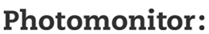
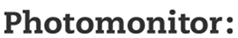
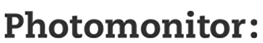

The MA Photography 2016/7 students would like to thank all the staff at LCC involved with the MA Photography course for their help, support and encouragement of our studies. In particular we would like to thank Wiebke Leister and Jelena Stojkovic for their tireless supervision and guidance throughout the course.
We would also like to thank all the tutors, lecturers and technical staff who have shared their experience and in-depth knowledge of contemporary photography, the history and philosophy of art, critical theory, gallery exhibition and installation, analogue and digital photographic techniques... the list is quite frankly endless: Victoria Ahrens, Jananne Al-Ani, Magali Avezou, Daniela Cascella, Richard Coles, Nicky Coutts, Wendy Ennis, Doug Fishbone, Zoe Forster, Nicky Hamlyn, Claire Hiscock, Andrew Marsh, Jessica Potter, Sophy Rickett, Luci Sabato, Daniel Salmon, Dallas Setz, Paul Tebbs, Burkhard Vogeler, Thijs groot Wassink, Wil Wilary-Attew, Val Williams and Adrian Wood. It has been a great priviledge to be in the presence of such a wealth of knowledge and experience.
We'd like to extend special thanks to Guillaume and Daniel at Studio Ard for their brilliantly innovative catalogue design.
Finally we'd like to thank the following sponsors for their support in the form of prizes presented at the final show:
